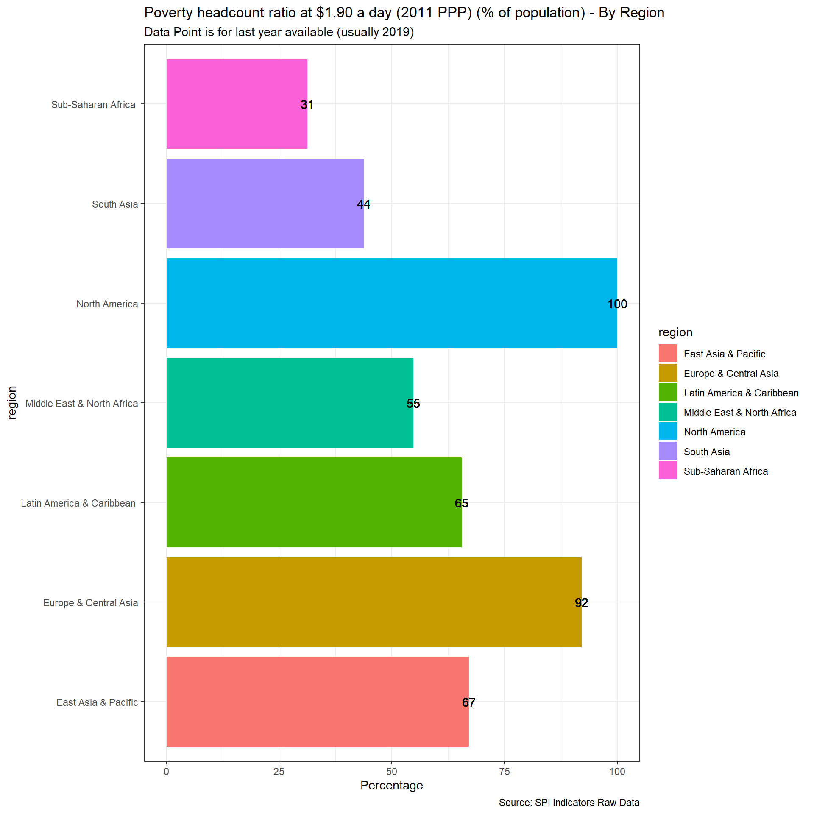
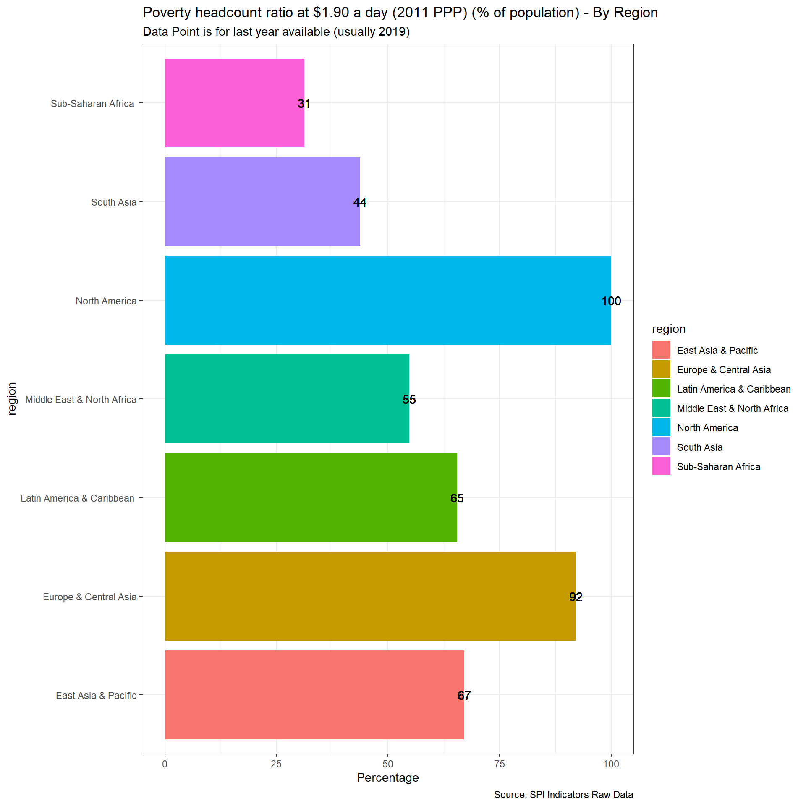
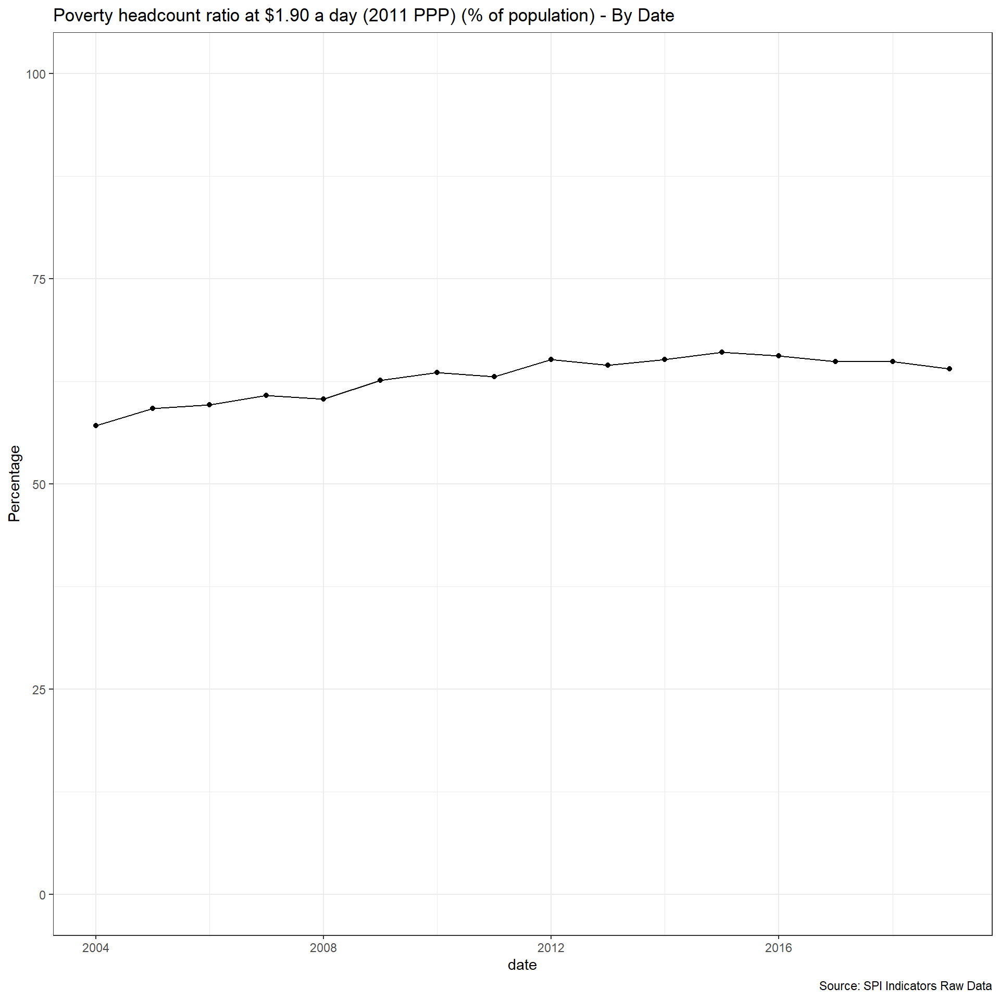
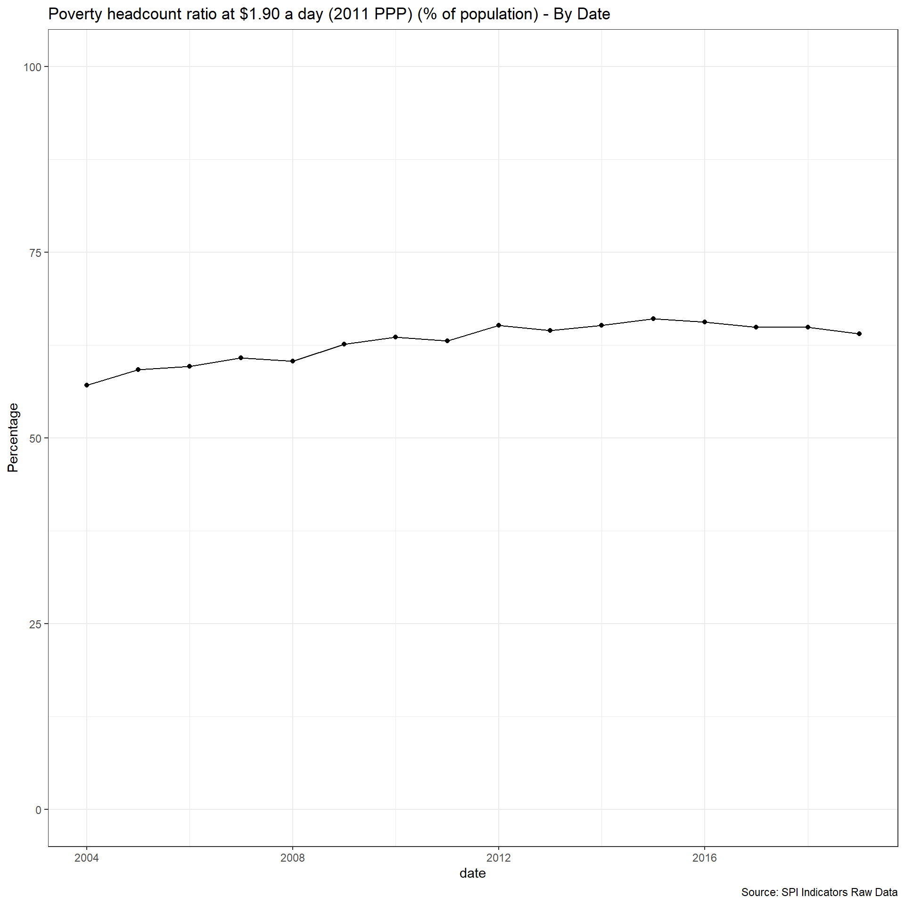
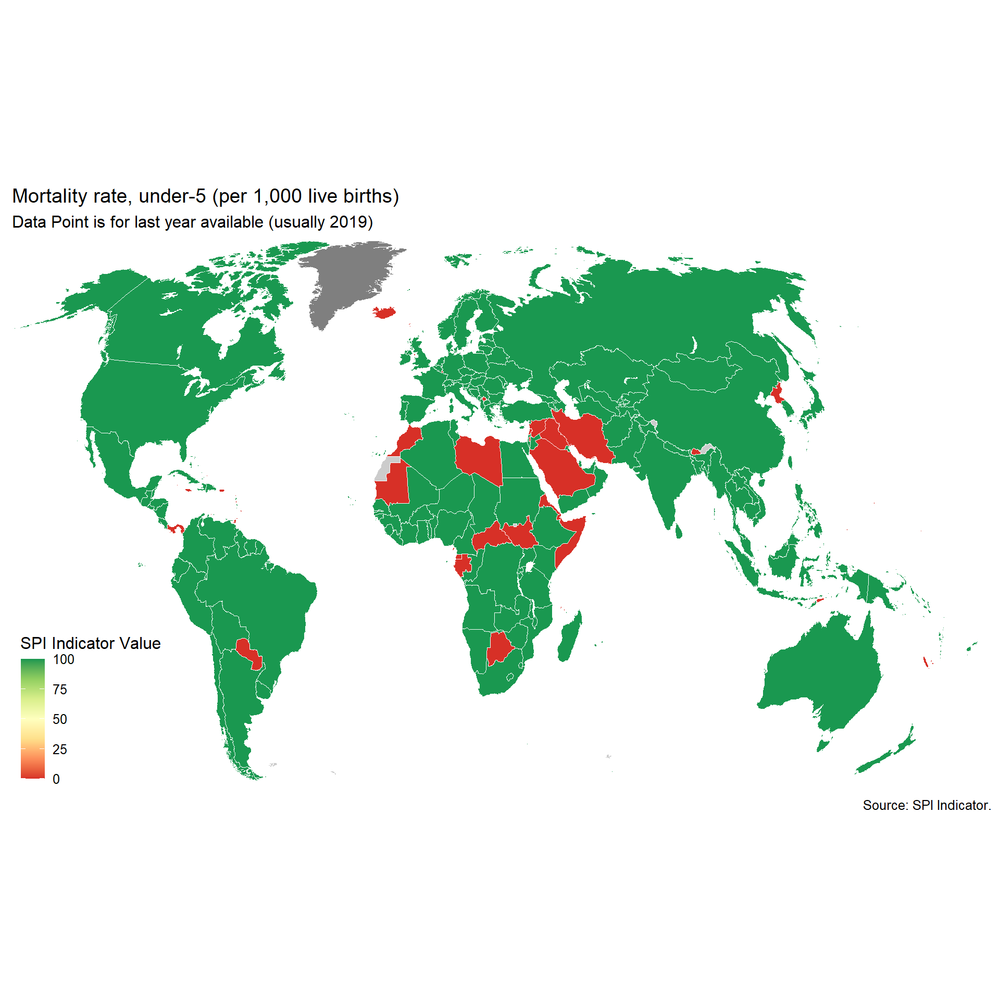
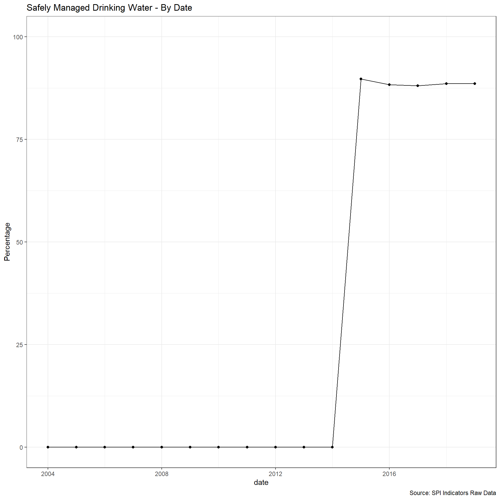
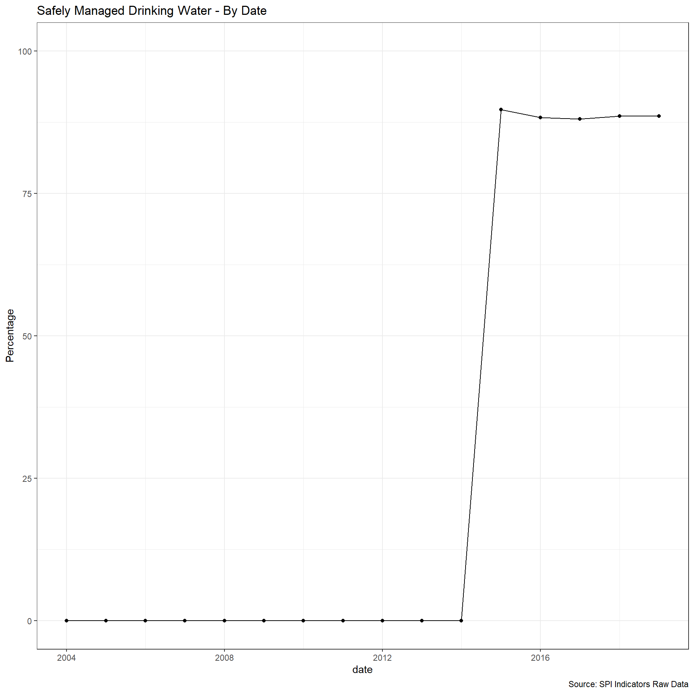

2 Data Use
Cleaning for Data Use Indicators. Data Use (5 Indicators):
- 1.1_DUNL - Indicator 1.1: Data use by national legislature
- 1.2_DUNE - Indicator 1.2: Data use by national executive branch
- 1.3_DUCS - Indicator 1.3: Data use by civil society
- 1.4_DUAC - Indicator 1.4: Data use by academia
- 1.5_DUIO - Indicator 1.5: Data use by international organizations
2.1 Dimension 1.1: Data use by national legislature
Not included because of lack of established methodology. In principle it may be possible to utilize websites of national legislatures but this will require further work and assessment.
2.2 Dimension 1.2: Data use by national executive branch
Not included because of lack of established methodology. There are some usable data sources with fairly good coverage (as used by PARIS21) but gaps in data have prevented fuller assessment of suitable methods.
2.3 Dimension 1.3: Data use by civil society
Not included because of lack of established methodology. There are some usable data sources with good coverage, for example from social media but more data is required to help assess and allow for likely biases between and within countries.
2.4 Dimension 1.4: Data use by academia
Not included because of lack of established methodology. We have not been able to find usable data sources with global coverage on which a new methodology could be developed.
2.5 Dimension 1.5: Data use by international organizations
The following indicator will measure how useful data sources produced in national statistics systems are for international organizations. We gather five measures of how useful or reliable country produced measures are for international organizations. The first on comparability of poverty estimates for the World Bank reporting on international poverty. A second on statistics on child mortality for the UN Inter-agency Group for Child Mortality Estimation. A third on accuracy of debt reporting as classified by the World Bank. A fourth on whether data sources are available to the JMP for estimating safely managed drinking water. A fifth on whether a suitable data source is available to the ILO for producing estimates of labor force participation. Each of these will be described in greater detail below.
We recognize that these data sources provide only partial coverage but consider that they do at least provide some indication of the performance of the national statistical system. With more complete data sources it would be possible to assess this further.
2.5.1 Poverty Comparability
The first measure examines whether comparable poverty estimates are produced by countries over time. The World Bank’s Povcalnet has introduced a comparability indicator for whether the country produces comparable poverty estimates over time. https://blogs.worldbank.org/opendata/apples-apples-povcalnet-introduces-new-comparability-indicator. This metadata has been compiled by the Country Poverty Economists in the World Bank’s Poverty and Equity Global Practice. From the Povcalnet team:
As countries frequently improve household surveys and measurement methodologies, strict comparability of poverty estimates over time is often limited. Strictly comparable poverty estimates within a country require a consistent production process, including the sampling frame, questionnaires, the methodological construction of the welfare aggregates and poverty lines, a consistent deflation of prices in time and space, among many other considerations. Thus, the assessment of comparability is country-dependent and relies on the knowledge of the Country Poverty Economist and Regional Poverty Teams of the Poverty Global Practice, as well as close dialogue with national data producers with intimate knowledge of the survey design and methodology. Within a country, we assume comparability of poverty estimates over time unless there is a known change to survey methodology, measurement or data structure. More details on the comparability metadata database can be found in Atamanov et al. (2019) (section 4). The database can be downloaded in csv.
The data will be pulled from the WDI and combined with metadata from the Povcalnet
Scoring is as follows:
Quality (1 points total):
1 Point. Comparable data lasting at least two years within past 5 years
0.5 Point. Comparable data lasting at least two years within past 10 years
0 Points. No comparable data within past 10 years
Note: Because poverty surveys are reported with a lag, we start measuring whether comparable poverty data is available two years prior. So for 2019, the window starts from 2017 to give countries time to prepare poverty estimates based on surveys.
library(pipr)
#new pipr package already includes survey coverage and comparability measures
df <- get_stats()
#save as csv
write_excel_csv(df, file=paste(raw_dir, '1.5_DUIO/PIP_comparability_latest.csv', sep="/"))
df <- read_csv(paste(raw_dir, '1.5_DUIO/PIP_comparability_latest.csv', sep="/")) %>%
#exclude certain surveys that were produced not by statistical system but produced and financed from private firm (non-official source). Change applies to India in particular.
filter(
!(survey_acronym=="CPHS" & country_code=="IND")
)
#Now loop from 2016 and 2019, keeping just data inside last 5 years.
for (reference_year in 2004:end_date) {
#extend the window for more recent years. For instance, 2020 surveys are reported with a lag, so give them two year grace period
if (reference_year>=2023) {
rec_window=7
} else if (reference_year==2022) {
rec_window=6
} else {
rec_window=5
}
temp_5<-df %>%
filter(survey_coverage %in% c('national')) %>% #keep just nationally representative samples
mutate(frequency=((reference_year-as.numeric(year))<=rec_window) & (reference_year>=as.numeric(year))) %>%
filter(frequency==TRUE) %>%
dplyr::group_by(country_code, survey_comparability) %>% #for each country and comparability type, get number of comparable estimates
dplyr::summarise(SPI.D1.5.POV_5=n()) %>%
ungroup() %>%
group_by(country_code) %>% #now get a total by country with the max number of comparable estimates
summarise(SPI.D1.5.POV_5=max(SPI.D1.5.POV_5, na.rm=T)) %>%
mutate(SPI.D1.5.POV_5=if_else(SPI.D1.5.POV_5>=2,1,0)) %>% #only give point if there is at least two observations that are comparable
mutate(date=reference_year,
iso3c=country_code) %>%
left_join(country_metadata) %>%
dplyr::select( iso3c, date, starts_with('SPI.D1.5.POV'))
temp_10<-df %>%
filter(survey_coverage %in% c('national')) %>% #keep just nationally representative samples
mutate(frequency=((reference_year-as.numeric(year))<=12) & (reference_year>=as.numeric(year))) %>%
filter(frequency==TRUE) %>%
dplyr::group_by(country_code, survey_comparability) %>% #for each country and comparability type, get number of comparable estimates
dplyr::summarise(SPI.D1.5.POV_10=n()) %>%
ungroup() %>%
group_by(country_code) %>% #now get a total by country with the max number of comparable estimates
summarise(SPI.D1.5.POV_10=max(SPI.D1.5.POV_10, na.rm=T)) %>%
mutate(SPI.D1.5.POV_10=if_else(SPI.D1.5.POV_10>=2,1,0)) %>% #only give point if there is at least two observations that are comparable
mutate(date=reference_year,
iso3c=country_code) %>%
left_join(country_metadata) %>%
dplyr::select( iso3c, date, starts_with('SPI.D1.5.POV'))
temp <- temp_5 %>%
left_join(temp_10) %>%
mutate(SPI.D1.5.POV=case_when(
SPI.D1.5.POV_5==1 ~ 1,
SPI.D1.5.POV_10==1 ~ 0.5,
TRUE ~ 0
)) %>%
select(-SPI.D1.5.POV_5,-SPI.D1.5.POV_10)
assign(paste("D3.1.AKI",reference_year,sep="_"), temp)
}
#now append together and save
for (i in c(2004:end_date)) {
temp<-get(paste('D3.1.AKI_',i, sep=""))
if (!exists('D3.1.AKI')) {
D3.1.AKI<-temp
} else {
D3.1.AKI<-D3.1.AKI %>%
bind_rows(temp) %>%
arrange(-date, iso3c)
}
}
#fix countries not included
D3.1.AKI<-D3.1.AKI %>%
right_join(spi_df_empty) %>%
mutate(SPI.D1.5.POV=if_else(lending_type_iso3c=="LNX",1,SPI.D1.5.POV)) %>%#we give non-IDA/IBRD/blend countries credit for this, because they are not measured in database
select(iso3c, date, SPI.D1.5.POV)2.5.2 Mortality rate, under-5 (per 1,000 live births)
UN IGME makes all available source data on child mortality rates available with metadata on quality.
https://childmortality.org/data/
Source data can bedivided into data included in the estimation model and data excluded from the estimation model (note: data may be excluded for any one of several reasons including data quality or by rule—for example, indirect estimates from summary birth histories are not included when direct estimates from the full birth history from the same survey or census are available).
Countries are assessed for whether they can produce indicators over a five or ten year period that meet the thresholds set by UN IGME.
Quality (1 points total):
1 Point. Two indicators that met UN IGME standards within past 5 years
0.5 Point. Two indicators that met UN IGME standards within past 10 years
0 Points. No data that met UN IGME standards within past 10 years
Data was pulled on April 13, 2020.
Note: Because surveys are reported with a lag, we start measuring whether comparable poverty data is available two years prior. So for 2019, the window starts from 2017 to give countries time to prepare poverty estimates based on surveys.
#Read in data from UN Inter-agency Group for Child Mortality Estimation
D3.3.AKI.MORT <- read_csv(file=paste(raw_dir, '1.5_DUIO/UN IGME Child Mortality and Stillbirth Estimates_2022.csv', sep="/")) %>%
as_tibble(.name_repair = 'universal') %>%
filter(Indicator=='Under-five mortality rate' & Sex=='Total' ) %>% #keep just observations for under 5 child mortality and for both sexes and overall wealth quintile
filter(Observation.Status=='Included in IGME') %>% # Also keep only surveys that met IGME criteria for inclusion as a nationally representative statistic
mutate(date=as.numeric(str_extract(Series.Year, "^.{4}")),
ind_date=as.numeric(str_extract(TIME_PERIOD, "^.{4}")),
country=Geographic.area,
D3.CHLD.MORT=OBS_VALUE) %>%
left_join(read_csv(file = paste(raw_dir, "/metadata/iso_codes.csv", sep="" ))) %>%
mutate(iso3c=if_else(country=="Côte d'Ivoire","CIV", iso3c))
#Now loop from 2016 and 2019, keeping just data inside last 5 years.
for (reference_year in 2004:end_date) {
#extend the window for more recent years. For instance, end_date surveys are reported with a lag, so give them two year grace period
if (reference_year==end_date) {
rec_window=7
} else if (reference_year==(end_date-1)) {
rec_window=6
} else {
rec_window=5
}
temp_5 <-D3.3.AKI.MORT %>%
mutate(frequency=(((reference_year-as.numeric(date))<=rec_window & (reference_year>=as.numeric(date))) | ((reference_year-as.numeric(ind_date))<=rec_window & (reference_year>=as.numeric(ind_date))))) %>% #whether to use the survey year or indicator report year depends on data source. for vital statistics sources need to use indicator reporting year, but for surveys use survey year
mutate(SPI.FREQ.D1.5.CHLD.MORT=if_else(frequency==TRUE,1,0)) %>% #create 0,1 variable for whether data point exists for country
group_by(iso3c) %>%
summarise(SPI.FREQ.D1.5.CHLD.MORT=sum(SPI.FREQ.D1.5.CHLD.MORT, na.rm=T)) %>%
mutate(SPI.FREQ.D1.5.CHLD.MORT=case_when(
SPI.FREQ.D1.5.CHLD.MORT>=2 ~ 1,
TRUE ~ 0
)) %>%
mutate(SPI.D1.5.CHLD.MORT_5=SPI.FREQ.D1.5.CHLD.MORT) %>%
mutate(date=reference_year) %>%
dplyr::select( iso3c, date, starts_with('SPI.')) %>%
select(-SPI.FREQ.D1.5.CHLD.MORT)
temp_10 <-D3.3.AKI.MORT %>%
mutate(frequency=((reference_year-as.numeric(date))<=rec_window) & (reference_year>=as.numeric(date))) %>%
mutate(SPI.FREQ.D1.5.CHLD.MORT=if_else(frequency==TRUE,1,0)) %>% #create 0,1 variable for whether data point exists for country
group_by(iso3c) %>%
summarise(SPI.FREQ.D1.5.CHLD.MORT=sum(SPI.FREQ.D1.5.CHLD.MORT, na.rm=T)) %>%
mutate(SPI.FREQ.D1.5.CHLD.MORT=case_when(
SPI.FREQ.D1.5.CHLD.MORT>=2 ~ 1,
TRUE ~ 0
)) %>%
mutate(SPI.D1.5.CHLD.MORT_10=SPI.FREQ.D1.5.CHLD.MORT) %>%
mutate(date=reference_year) %>%
dplyr::select( iso3c, date, starts_with('SPI.')) %>%
select(-SPI.FREQ.D1.5.CHLD.MORT)
temp <- temp_5 %>%
left_join(temp_10) %>%
mutate(SPI.D1.5.CHLD.MORT=case_when(
SPI.D1.5.CHLD.MORT_5==1 ~ 1,
SPI.D1.5.CHLD.MORT_10==1 ~ 0.5,
TRUE ~ 0
)) %>%
select(-SPI.D1.5.CHLD.MORT_5,-SPI.D1.5.CHLD.MORT_10)
assign(paste("D3.3.AKI",reference_year,sep="_"), temp)
}
#now append together and save
for (i in c(2004:end_date)) {
temp<-get(paste('D3.3.AKI_',i, sep=""))
if (!exists('D3.3.AKI')) {
D3.3.AKI<-temp
} else {
D3.3.AKI<-D3.3.AKI %>%
bind_rows(temp) %>%
arrange(-date, iso3c)
}
}2.5.3 Debt service (PPG and IMF only, % of exports of goods, services and primary income)
For this indicator, Debt service (PPG and IMF only, % of exports of goods, services and primary income), we will pull data from the WDI but modify the scoring using the WDI metadata on whether the external debt data is actual, estimated, or preliminary. The status “as reported (actual)” indicates that the country was fully current in its reporting under the DRS and that World Bank staff are satisfied that the reported data give an adequate and fair representation of the country’s total public debt. “Preliminary” data are based on reported or collected information, but because of incompleteness or other reasons, an element of staff estimation is included. “Estimated” data indicate that countries are not current in their reporting and that a significant element of staff estimation has been necessary for producing the data tables.
Scoring is as follows:
Quality:
1 Points. Actual value 0.67 Points. Preliminary value 0.33 Points. Estimated value 0 Points. No value
#reshape metaadata file
D3.15.AKI <- WDI_metadata %>%
transmute(iso3c=if_else(is.na(Country.Code), Code, Country.Code),
date=date,
External_debt_Reporting=External.debt.Reporting.status,
Income.Group=Income.Group) %>%
mutate(SPI.D1.5.DT.TDS.DPPF.XP.ZS= case_when(
External_debt_Reporting=='Actual' ~ 1,
External_debt_Reporting=='Preliminary' ~ 0.67,
External_debt_Reporting=='Estimate' ~ 0.33,
TRUE ~ 0
)) %>%
mutate(SPI.D1.5.DT.TDS.DPPF.XP.ZS=if_else(((Income.Group=="High income" | iso3c %in% c("WBG", "PSE")) & is.na(External_debt_Reporting)),1,SPI.D1.5.DT.TDS.DPPF.XP.ZS)) %>% #fix an issue where high income countries are not judged on their debt reporting. Also give credit to West Bank and Gaza as they are not an IMF country
ungroup() %>%
dplyr::select(iso3c, date, contains('SPI.D1.5.DT.TDS.DPPF.XP.ZS')) 2.5.4 Safely Managed Water
The WHO/UNCIECF JMP has estimated the safely managed water access by a simple linear regression based on the following data sources: Nationally representative household surveys (e.g. DHS, MICS) ; Population and housing censuses; Administrative data (such as regulatory agencies); Service provider data. JMP has provided the country files that include the original data sources.
From the methodology: https://washdata.org/sites/default/files/JMP%20methodology-Apr-2018-5.pdf:
The indicator for SDG 6.1, safely managed drinking water services are defined as use of an improved drinking water source which is accessible on premises, available when needed and free from contamination. To make an estimate of safely managed services, information on the use of improved drinking water sources is combined with information on the accessibility, availability and quality of drinking water. Estimates are based on the minimum value of these criteria or, where estimates are available for both rural and urban, a population weighted average of the two. The JMP reports estimates for safely managed drinking water provided information is available for at least 50 per cent of the population on quality of drinking water and either accessibility or availability.
We take therefore useable data if it appears within an 8 year window of the reference date. Scoring:
- 1 Point. At least two estimates, with breakdowns for urban/rural areas, within an 8 year window
- 0.5 Points. At least two estimates, but not an urban/rural breakdown, within an 8 year window
- 0 Points. Otherwise
#read in saved data
safely_managed_raw_df <- read_csv(file=paste(raw_dir, '1.5_DUIO/Safely_Managed_Water_data.csv', sep="/"))
#score the data
#function to calculate 10 year window
window_fun <- function(date_start, date_end) {
temp <- safely_managed_raw_df %>%
filter(between(year,date_start,date_end) ) %>%
group_by(iso3c, geo) %>%
summarise(data_quality=sum(data_quality, na.rm=T)) %>% #average over 10 years
pivot_wider(
names_from = 'geo',
values_from = 'data_quality'
) %>%
mutate(
SPI.D1.5.SAFE.MAN.WATER=case_when(
(Rural>=2 & Urban>=2) ~ 1, #urban rural breakdown gets 1 point
(Rural>=2 | Urban>=2 | National>=2) ~ 0.5, #partial data at at least one geography gets 0.5
TRUE ~ 0
)
) %>%
select(iso3c, SPI.D1.5.SAFE.MAN.WATER) %>%
mutate(date=date_end)
}
####
# 8 Year window
####
#create this database for each year from 2004 to end_date using a 8 year window
for (i in c(2015:end_date)) {
end=i
#extend the window for more recent years. For instance, end_date surveys are reported with a lag, so give them two year grace period
if (end==end_date) {
start=i-9
} else if (end==(end_date-1)) {
start=i-8
} else {
start=i-7
}
temp_df <- window_fun(start,end)
assign(paste('safe_managed_',end, sep=""), temp_df)
}
if (exists('safe_managed_df')) {
rm('safe_managed_df')
}
#now append together and save
for (i in c(2015:end_date)) {
temp<-get(paste('safe_managed_',i, sep=""))
if (!exists('safe_managed_df')) {
safe_managed_df<-temp
} else {
safe_managed_df<-safe_managed_df %>%
bind_rows(temp) %>%
arrange(-date, iso3c)
}
}2.5.5 Labor Force Statistics
In this indicator, we compare estimated labor force participation data compared to data submitted to the ILO based on national data. ILOSTAT is the source of both datasets. Countries are given full points if an indicator is produced by a national government based on a labor force survey and if that estimate is within 10 percentage points of the ILO estimated value. If either of those two components are missing, but one is available, then the country gets 0.5 points. O points otherwise.
The ILO modelled estimates series provides a complete set of internationally comparable labour statistics, including both nationally-reported observations and imputed data for countries with missing data. The imputations are produced through a series of econometric models maintained by the ILO. The purpose of estimating labour market indicators for countries with missing data is to obtain a balanced panel data set so that, every year, regional and global aggregates with consistent country coverage can be computed. These allow the ILO to analyse global and regional estimates of key labour market indicators and related trends. Moreover, the resulting country-level data, combining both reported and imputed observations, constitute a unique, internationally comparable data set on labour market indicators.
From the ILO methodological note (https://www.ilo.org/ilostat-files/Documents/TEM.pdf), ILO has the following preferences for data with Labor force surveys coming first:
With regard to the first criterion, in order for labour market data to be included in a particular model, they must be derived from a labour force survey, a household survey or, more rarely, a population census. National labour force surveys are generally similar across countries and present the highest data quality. Hence, the data derived from such surveys are more readily comparable than data obtained from other sources. Strict preference is therefore given to labour force survey-based data in the selection process. However, many developing countries, which lack the resources to carry out a labour force survey, do report labour market information on the basis of other types of household surveys or population censuses. Consequently, because of the need to balance the competing goals of data comparability and data coverage, some (non-labour force survey) household survey data and, more rarely, population census-based data are included in the models.
Scoring:
1 Point. Country has a labor force survey based estimate in past 5 years of labor force participation broken down by total, male, and female & estimated value from ILO is within 10 percentage points of value reported by national government.
0.5 Point. Country has labor force survey or is within 10 points of ILO, but not both
0 Points. Otherwise
#request for surveys data
#https://www.ilo.org/shinyapps/bulkexplorer2/?lang=en&segment=indicator&id=EAP_DWAP_SEX_AGE_RT_A&ref_area=AFG+ALB+DZA+ASM+AND+AGO+AIA+ATG+ARG+ARM+ABW+AUS+AUT+AZE+BHS+BHR+BGD+BRB+BLR+BEL+BLZ+BEN+BMU+BTN+BOL+BIH+BWA+BRA+VGB+BRN+BGR+BFA+BDI+KHM+CMR+CAN+CPV+CYM+CAF+TCD+CHL+CHN+COL+COM+COG+COD+COK+CRI+HRV+CUB+CUW+CYP+CZE+CIV+DNK+DJI+DMA+DOM+ECU+EGY+SLV+GNQ+EST+SWZ+ETH+FRO+FLK+FJI+FIN+FRA+GUF+PYF+GAB+GMB+GEO+DEU+GHA+GIB+GRC+GRL+GRD+GLP+GUM+GTM+GGY+GIN+GNB+GUY+HTI+HND+HKG+HUN+ISL+IND+IDN+IRN+IRQ+IRL+IMN+ISR+ITA+JAM+JPN+JEY+JOR+KAZ+KEN+KIR+KOR+KOS+KWT+KGZ+LAO+LVA+LBN+LSO+LBR+LBY+LIE+LTU+LUX+MAC+MDG+MWI+MYS+MDV+MLI+MLT+MHL+MTQ+MRT+MUS+MEX+FSM+MDA+MCO+MNG+MNE+MSR+MAR+MOZ+MMR+NAM+NRU+NPL+NLD+ANT+NCL+NZL+NIC+NER+NGA+NIU+NFK+MKD+MNP+NOR+PSE+OMN+PAK+PLW+PAN+PNG+PRY+PER+PHL+POL+PRT+PRI+QAT+ROU+RUS+RWA+REU+SHN+KNA+LCA+VCT+WSM+SMR+STP+SAU+SEN+SRB+SYC+SLE+SGP+SVK+SVN+SLB+ZAF+SSD+ESP+LKA+SDN+SUR+SWE+CHE+SYR+TWN+TJK+TZA+THA+TLS+TGO+TON+TTO+TUN+TUR+TKM+TCA+TUV+UGA+UKR+ARE+GBR+USA+VIR+URY+UZB+VUT+VEN+VNM+YEM+ZMB+ZWE&sex=SEX_T&classif1=AGE_5YRBANDS_TOTAL+AGE_5YRBANDS_Y05-09+AGE_5YRBANDS_Y10-14+AGE_5YRBANDS_Y15-19+AGE_5YRBANDS_Y20-24+AGE_5YRBANDS_Y25-29+AGE_5YRBANDS_Y30-34+AGE_5YRBANDS_Y35-39+AGE_5YRBANDS_Y40-44+AGE_5YRBANDS_Y45-49+AGE_5YRBANDS_Y50-54+AGE_5YRBANDS_Y55-59+AGE_5YRBANDS_Y60-64+AGE_5YRBANDS_YGE65+AGE_10YRBANDS_TOTAL+AGE_10YRBANDS_YLT15+AGE_10YRBANDS_Y15-24+AGE_10YRBANDS_Y25-34+AGE_10YRBANDS_Y35-44+AGE_10YRBANDS_Y45-54+AGE_10YRBANDS_Y55-64+AGE_10YRBANDS_YGE65+AGE_AGGREGATE_TOTAL+AGE_AGGREGATE_YLT15+AGE_AGGREGATE_Y15-24+AGE_AGGREGATE_Y25-54+AGE_AGGREGATE_Y55-64+AGE_AGGREGATE_YGE65+AGE_YTHADULT_YGE15+AGE_YTHADULT_Y15-64+AGE_YTHADULT_Y15-24+AGE_YTHADULT_YGE25&timefrom=2010&timeto=2022
#modelled
# https://www.ilo.org/shinyapps/bulkexplorer2/?lang=en&segment=indicator&id=EAP_2WAP_SEX_AGE_RT_A&ref_area=AFG+ALB+DZA+AGO+ARG+ARM+ABW+AUS+AUT+AZE+BHS+BHR+BGD+BRB+BLR+BEL+BLZ+BEN+BTN+BOL+BIH+BWA+BRA+BRN+BGR+BFA+BDI+KHM+CMR+CAN+CPV+CAF+TCD+CHA+CHL+CHN+COL+COM+COG+COD+CRI+HRV+CUB+CYP+CZE+CIV+DNK+DJI+DOM+ECU+EGY+SLV+GNQ+ERI+EST+SWZ+ETH+FJI+FIN+FRA+PYF+GAB+GMB+GEO+DEU+GHA+GRC+GUM+GTM+GIN+GNB+GUY+HTI+HND+HKG+HUN+ISL+IND+IDN+IRN+IRQ+IRL+ISR+ITA+JAM+JPN+JOR+KAZ+KEN+PRK+KOR+KWT+KGZ+LAO+LVA+LBN+LSO+LBR+LBY+LTU+LUX+MAC+MDG+MWI+MYS+MDV+MLI+MLT+MRT+MUS+MEX+MDA+MNG+MNE+MAR+MOZ+MMR+NAM+NPL+NLD+NCL+NZL+NIC+NER+NGA+MKD+NOR+PSE+OMN+PAK+PAN+PNG+PRY+PER+PHL+POL+PRT+PRI+QAT+ROU+RUS+RWA+LCA+VCT+WSM+STP+SAU+SEN+SRB+SLE+SGP+SVK+SVN+SLB+SOM+ZAF+SSD+ESP+LKA+SDN+SUR+SWE+CHE+SYR+TWN+TJK+TZA+THA+TLS+TGO+TON+TTO+TUN+TUR+TKM+UGA+UKR+ARE+GBR+USA+VIR+URY+UZB+VUT+VEN+VNM+ESH+YEM+ZMB+ZWE+X01+X02+X03+X04+X05+X06+X07+X08+X09+X93+X10+X11+X12+X13+X14+X15+X16+X81+X17+X18+X19+X20+X21+X22+X23+X24+X25+X26+X27+X28+X29+X30+X31+X32+X33+X34+X35+X36+X94+X37+X38+X39+X40+X41+X42+X43+X44+X45+X46+X86+X47+X48+X49+X51+X52+X53+X54+X55+X56+X57+X58+X59+X60+X95+X61+X62+X63+X64+X65+X66+X67+X68+X69+X70+X71+X72+X73+X78+X96+X75+X76+X77+X74+X79+X84+X85+X92+X82+X83+X87+X88+X89+X90+X91&sex=SEX_T&classif1=AGE_5YRBANDS_TOTAL+AGE_5YRBANDS_Y05-09+AGE_5YRBANDS_Y10-14+AGE_5YRBANDS_Y15-19+AGE_5YRBANDS_Y20-24+AGE_5YRBANDS_Y25-29+AGE_5YRBANDS_Y30-34+AGE_5YRBANDS_Y35-39+AGE_5YRBANDS_Y40-44+AGE_5YRBANDS_Y45-49+AGE_5YRBANDS_Y50-54+AGE_5YRBANDS_Y55-59+AGE_5YRBANDS_Y60-64+AGE_5YRBANDS_YGE65+AGE_10YRBANDS_TOTAL+AGE_10YRBANDS_YLT15+AGE_10YRBANDS_Y15-24+AGE_10YRBANDS_Y25-34+AGE_10YRBANDS_Y35-44+AGE_10YRBANDS_Y45-54+AGE_10YRBANDS_Y55-64+AGE_10YRBANDS_YGE65+AGE_AGGREGATE_TOTAL+AGE_AGGREGATE_YLT15+AGE_AGGREGATE_Y15-24+AGE_AGGREGATE_Y25-54+AGE_AGGREGATE_Y55-64+AGE_AGGREGATE_YGE65+AGE_YTHADULT_YGE15+AGE_YTHADULT_Y15-64+AGE_YTHADULT_Y15-24+AGE_YTHADULT_YGE25&timefrom=2010&timeto=2022
#read in ILO reference areas
ilo_ref_area <- read_csv(file= paste0(raw_dir,"/metadata/ILO_reference_area.csv")) %>%
transmute(iso3c=ref_area,
country=ref_area.label)
#read in the ILO data downloaded on November 24, 2020
lfp_estimated <- read_csv(paste0(raw_dir,"/1.5_DUIO/ILO_LFP_modelled-2024-01-24.csv")) %>%
as_tibble(.name_repair = 'universal') %>%
mutate(iso3c=ref_area,
date=time,
estimated_value=obs_value) %>%
#left_join(ilo_ref_area) %>%
select(iso3c, date, estimated_value )
#reported data by countries
lfp_reported <- read_csv(paste0(raw_dir,"/1.5_DUIO/ILO_LFP_survey-2024-01-24.csv")) %>%
as_tibble(.name_repair = 'universal') %>%
mutate(iso3c=ref_area,
date=time,
reported_value=obs_value,
source=source.label) %>%
select(iso3c, date, source, reported_value )
#merge the two together
lfp_data <- lfp_reported %>%
left_join(lfp_estimated) %>%
mutate(estimate_diff=if_else(!is.na(estimated_value),reported_value-estimated_value,0),
lfs_source=(grepl("LFS",source))) %>%
filter(iso3c %in% country_metadata$iso3c)
#score the data
#function to calculate 10 year window
ilo_fun <- function(date_start, date_end) {
temp <- lfp_data %>%
filter(between(date,date_start,date_end) ) %>%
dplyr::group_by(iso3c) %>%
dplyr::summarise(SPI.D1.5.LFP.ACC=as.numeric(mean(estimate_diff, na.rm=T)<=10),
SPI.D1.5.LFP.SOURCE=max(lfs_source, na.rm=T),
SPI.D1.5.LFP=(SPI.D1.5.LFP.ACC+SPI.D1.5.LFP.SOURCE)/2) %>%
select(iso3c, SPI.D1.5.LFP) %>%
mutate(date=date_end)
}
####
# 5 Year window
####
#create this database for each year from 2004 to 2020 using a 10 year window
for (i in c(2010:end_date)) {
end=i
#extend the window for more recent years. For instance, 2020 surveys are reported with a lag, so give them two year grace period
if (end==end_date) {
start=i-6
} else if (end_date-1) {
start=i-5
} else {
start=i-4
}
temp_df <- ilo_fun(start,end)
assign(paste('lfp_data_',end, sep=""), temp_df)
}
if (exists('lfp_data_df')) {
rm('lfp_data_df')
}
#now append together and save
for (i in c(2010:end_date)) {
temp<-get(paste('lfp_data_',i, sep=""))
if (!exists('lfp_data_df')) {
lfp_data_df<-temp
} else {
lfp_data_df<-lfp_data_df %>%
bind_rows(temp) %>%
arrange(-date, iso3c)
}
}## [1] "SPI.D1.5.POV" 
 

## [1] "SPI.D1.5.CHLD.MORT"


## [1] "SPI.D1.5.DT.TDS.DPPF.XP.ZS"


## [1] "SPI.D1.5.SAFE.MAN.WATER"

 

## [1] "SPI.D1.5.LFP"